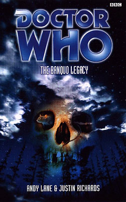

|
The Banquo Legacy
|
BASIC PLOT [Warning. More than most Doctor Who books, the spoilers here will really ruin the book for you if you haven't read it. If you are likely to do so, we strongly recommend that you do so first, and then read this afterwards. And, if you can, we really do recommend that you read it, as it's one of the best Doctor Who books that was ever produced.] DOCTOR COMPANIONS MATERIALISATION CIRCUIT PREPARATORY READING CONTINUITY REFERENCES Pg 9 "The - Time - Lords." Yes, it is they. As a result of the conclusion of The Shadows of Avalon. Pg 10 "'England. Late nineteenth century.' The Doctor rubbed his hands together in a gleeful gesture that was belied by his sombre expression. 'Quite my favourite time and place,' he said. 'Given the choice, if I had to be trapped in one time and place -'" Almost as if he knew; uncanny. This pre-empts Fitz and Compassion's decision to put the damaged Doctor in this period in The Ancestor Cell, and hence it's the time period setting for The Burning. Pg 11 "'Obviously,' the figure that was and was not Compassion said." Her tagline from Interference et al, although we haven't heard it much since she turned into a TARDIS. When Simpson uses it, on page 13, though, we were thrilled. Pg 22 "In fact it was in the winter of 1898 at Mortarhouse College in Oxford." The Dean of Mortarhouse, the Reverend Ernest Matthews, appeared in Ghost Light. The College does not exist in the real world. Pg 28 "R'lyeh wgah nagh fhtagn." No, your html converter has not just packed up. This is a quote from the Necronomicon and mentions Ry'leh (despite spelling discrepancies), the setting of the last third of Andy Lane's All-Consuming Fire. Pg 88 "Irving Braxiatel would have a field day in here." Braxiatel, mentioned in City of Death, first appeared in Theatre of War and thence in the Gallifrey audios and the Benny novels and audios. Not bad for an off-hand Douglas Adams throwaway line is it? "Poss. Blake? Check roots against Alhazared." William Blake, unlikely star of The Pit. Not Roj Blake, unlikely non-star of Blake's 7. Pg 89 "'I don't like rats,' muttered the Doctor, darkly. 'I once had a friend who was almost eaten by one.'" Leela, in The Talons of Weng-Chiang. Pg 90 "It was the knowledge that everything I could see in his exposed face lay under my own as well." The intimation of death being within the living is, kind of, a thematic follow up to what Compassion was thinking about in Coldheart, although this is unlikely to be deliberate. Pg 93 "I once did something similar with a charge of distronic radiation on a Zygon ship in Scotland." Terror of the Zygons. And note that the authors specifically state 'in Scotland', as if they're terrified of being accidentally associated with The Bodysnatchers. Distronic radiation comes from Genesis of the Daleks. Pg 130 "Fear brings people closer together." An Unearthly Child, and it's particularly noteworthy that this line is in reference to a character called Susan. Pg 139 "Beside the coins was a pile of six white squares made of some hard, cold material. Cards for notes, perhaps?" It's a hypercube, as named in Vampire Science, but seen first in The War Games. But, if you've been dragged into the Victorian world of the novel, and you don't know that Simpson's the Time Lord agent, it's only 50/50 that you'll spot this for what it is. Pg 141 "Those boots of his were never made in England." No, they were made in America. See the Telemovie. Pg 147 "'Blasting powder, Express Dynamite, Saxonite, detonators; he's got it all. He chuckled. 'Some of the poachers around here would pay a pretty penny to get their hands on that, I can tell you.'" How very Pyramids of Mars. Pg 186 "Great Ras- Good God." Ah. This'll be the big clue that Simpson's the Time Lord agent then. He oh so nearly said 'Rassilon', from The Deadly Assassin et al. Pg 195 "I'll just have to let nature take its course - human nature, that is." Presumably a deliberate reference to Human Nature, the book. Pg 204 "No more Galileos; no more Newtons; nevermore a Faraday." This is a startlingly effective misquote of The Two Doctors; in the original, the last word was 'butterfly. "And that is why Romana has to be stopped." The Shadows of Avalon. Pg 209 "I contain multitudes." This line is quoted in Falls the Shadow and was used in a famous DWB article to describe the sixth Doctor, but originally comes from Walt Whitman's Song of Myself. Pg 211 "The Doctor crossed to the French windows. It was pitch black outside and I could see his reflection staring back in at me." Somehow this reminds me of the sequences in The Infinity Doctors and Father Time which have two eighth Doctors standing next to each other. I'm sure, though, that it's not deliberate. Pg 217 "There is some corner of a British chimney that is forever Gally-free [sic]." It's Rupert Brooke originally, but was also quoted, by Benny, in Love and War. Pg 218 "'Strange,' said Baker, peering up worriedly. 'I thought the Doctor was German, not Irish.'" The 'Gallifrey is in Ireland' joke, first perpetrated on the universe by Bob Baker and Dave Martin in The Invisible Enemy. Pg 227 "'Not broken,' he said. 'But there's some swelling. A sprain, I would say.'" Compassion is suddenly vulnerable enough to sustain a sprained ankle, in the time-honoured tradition of companions everywhere, starting with Susan in The Dalek Invasion of Earth. "It inhibits the block-transfer equations that make reconstitution and regeneration of the outer plasmic shell possible." Logopolis. Pg 228 "'You work it out,' he croaked. I could hear the blood in his throat. 'You've read Borusa, just as I have.'" As is later explained, this is a reference to the hiding a tree in a wood comment from The Invasion of Time. Pg 236 "Oh, it's only a flesh wound." Monty Python and the Holy Grail. Pg 259 "'You were right when you guessed that contact had been made between Richard and me. But you didn't know, you couldn't know, how beautiful it was.' 'You might be surprised,' the Doctor said." This is a reference to 'Contact' from The Three Doctors and books too numerous to mention. Pg 265 "No Artron energy for the timonics." Timonic devices, bombs and the like, pop up in the Gallifrey audio series a lot. Pg 267 "Her eyes were shining and bright, deep whirlpools of experience." Compassion's eyes showed the whirls of the Vortex in The Shadows of Avalon. Pg 276 "It looked like a pack of cards. Except that they were square. He seemed to be lining them up along their edges, forming them into a shape. A box. She knew instinctively, as if from some memory or knowledge that was not her own, what he was doing. What it meant." A hypercube from The War Games. We see the results of what happens next in The Ancestor Cell. "It was the last thing he never did." A reference to the destruction of Gallifrey as we see in The Ancestor Cell, and the fact that, having been destroyed, it never actually existed, as we learn in The Adventuress of Henrietta Street. OLD FRIENDS AND OLD ENEMIES NEW FRIENDS AND NEW ENEMIES John Hopkinson, Inspector Ian Stratford, Susan Seymour. Simpson. Professor Sowenden, Chief Inspector Driscoll.
CONTINUITY COCK-UPS PLUGGING THE HOLES [Fan-wank theorizing of how to fix continuity cock-ups] FEATURED ALIEN RACES FEATURED LOCATIONS Pg 7 Banquo Manor and environs, 1898AD. Pg 12 A nursing home, 1968AD. Pg 16 Three Sisters, in the south of England, 1898AD (the location of Banquo Manor), and it should be noted that the place doesn't actually exist, although there is a Three Sisters near Swansea in Wales. Pg 22 Mortarhouse College, Oxford, January 1898. Pg 35 Scotland Yard, 1898. Pg 36 Stratford's lodgings in Notting Hill. Pg 36 Paddington Station. Pg 51 Three Sisters Police Station. IN SUMMARY - Anthony Wilson |
|
 |